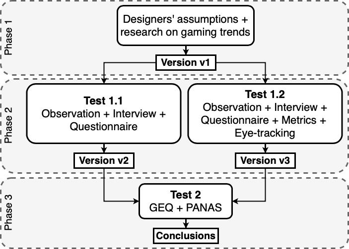
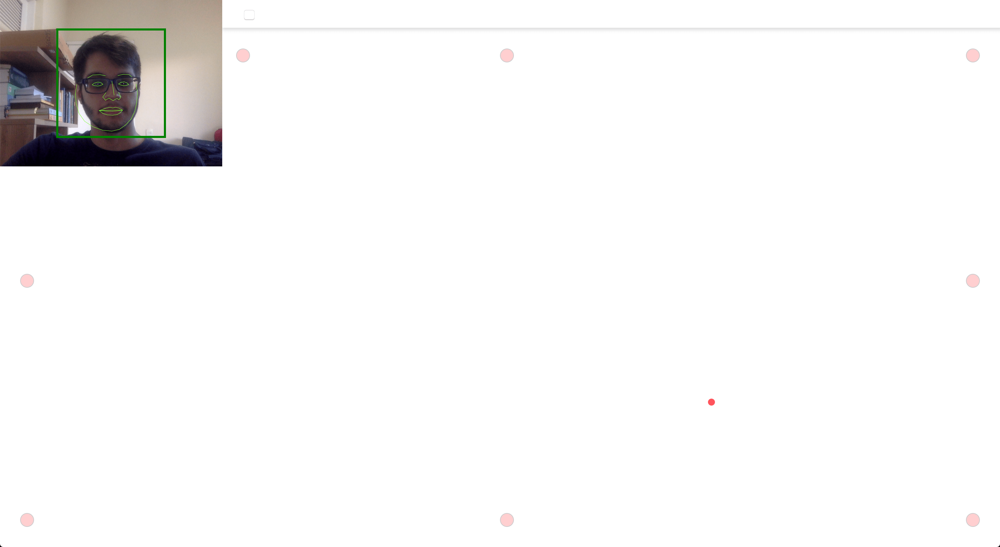

Downside Up
This is a repository for extra information about the game Downside Up and it’s companion paper titled
Evaluating the Use of Affordable User Testing and Visualization Techniques in Level Design of a 2D
Platform Game.
Please keep in mind that some information was removed and
will be filled after the blind review process is over.
1. Credits
Game development credits:
- - Programming: ??? ??? ???
- - Game Design: ??? ??? ???
Scientific paper credits:
Special thanks to...
2. Paper Overview
We analyze the inclusion of two affordable complementary methods, namely webcam-based eye-tracking and telemetry, along with data visualization in a playtesting routine.
By developing three versions of a hardcore 2D platform game that demands multitasking abilities using different GUR methods, we were able to find that the chosen complementary methods cover a significant amount of gameplay issues.
The metrics and eye-tracking data visualization provided insights about multitasking and level design.
Furthermore, we discuss the challenges of evaluating prototypes with relation to a more enjoyable experience when frustration is a desired gameplay element.
3. Game Overview
Downside Up is a hardcore 2D platform game in which players must guide an avatar through two mirrored screens.
Objects may appear in only one of those screens, besides existing in both, so players must use their gaze to understand and overcome challenges.
The game is composed of three levels, and each level consists of smaller challenges. There are 18 challenges altogether. We expect players to finish the game in 40 minutes.
We believe the game contains mechanics that subvert the usual 2D platform genre design expectations, thus making it enjoyable and an exciting opportunity for research.

4. Methodology Overview
Our approach intends to evaluate to what extent user research improves the level design of 2D games using Downside Up as a case study.
We consider in the context of this research that overall level design quality is directly related to what players perceive as ``fun'', which is the positive emotional response to learning, puzzle-solving and overcoming challenges.
We do not rigorously evaluate aspects of the game experience that could be considered fun, such as flow, immersion, and attention. Our work assesses fun through user-reported emotions. To assess it, we applied translated modifications of two questionnaires:
GEQ (core module and post-game module) and PANAS.

In Phase 1, there is the development of the first version of Downside Up (v1) based on assumptions about the game's target audience.
Then, in Phase 2, there is the first user test with v1 (Test 1.1), which provided data for a series of level design changes that were applied to v1 to generate a new version (v2). A second test with v1 adopting different methods (Test 1.2) produced a
new set of design recommendations that, after applied to v1, generate v3.
Finally, in Phase 3, players play either v2 or v3 and fill the GEQ and the PANAS questionnaires (Test 2). The results are then compared to determine which of these versions is the most fun to play.
5. Results Overview
We were able to find through the proposed methodology interesting data about Downside Up's design, Games User Research and the intrinsinc limitations of this research.
A detailed discussion about these topics is presented in our paper. Results from Phase 2 reveal many usability issues such as spikes positioned in ways that lead to unfair deaths, platforms that require movements hard to perform, section where it is difficult
to maneuver the avatar and others. Results from Phase 3 reveal insights about fun, frustration and difficulty.

6. Conclusion Overview
We evaluated the use of affordable methods in level design of a 2D platform game and found interesting questions about:
-
- the hardcore platformer game genre;
-
- The difficulties of evaluating fun;
-
- Frustration as a desirable element;
-
- A novel data visualization;
Future work includes:
-
- Expand this research and further investigate multitasking in games through data visualization;
-
- Investigate how fun and difficulty in 2D hardcore games are related;
-
- Adding biometric user testing methods;
-
- Compare webcam-based eye-tracking with dedicated devices;
-
- Compare results from this platform game with games from other genres, such as puzzle games;
8. Data Resources
Here you can see some data used for this research:
9. Third Party Resources
Here you can see some third party resources used for this research:
